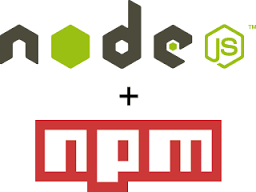
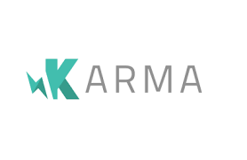

Angular from scratch
Le framework front par Google
Par Antoine CARON / @Slashgear_
Objectif
- Décourvrir le framework AngularJS 1.5.
- Mettre un pied dans le monde du développement Front en Javascript.
- Comprendre comment apprendre seul ?
Avant-Propos
Cette présentation a été réalisée grâce à Reveal.js
Il existe une version avec interface graphique Slide.js
C'est OpenSource, c'est beau, c'est bien, mangez-en !
Késako
- Framework Front écrit en Javascript et compatible tout navigateur (IE >8)
- Clientside Rendering
- Webservices
- Décomposition en web-composants
Comment va-t-on procéder ?
- Une recette
- Live Coding
- De plus en plus dans les détails, de plus en plus d'outils
La recette
- Un bon outils : Atom
- Un bon styleguide, pour éviter de faire n'importe quoi
- Des bons plugins : John Papa Snippets, Atom Beautify, et tous ceux que vous voulez
- Internet pour les documentations
Aller c'est parti !!
Etape 0 : la base d'Angular
Et si on parlait WebComponent
Etape 1 : Une application hyper simpliste
C'est le bordel
- Trop d'imports.
- Des librairies sans moyen de les manager.
- Aucune automatisation de tâche
- Obligé de refresh la page
- Les performances
- Aucun server de développement
NodeJs et NPM
Et hop ! un gestionnaire de packages (Développement)
Bower
La solution pour les dépendances Web (CSS,JS,Fonts)

Gulp et Grunt
Enfin de quoi automatiser des tâches
- Minification de code
- Création d'un micro-server de développement
- Livereload (OMG !!)
- Auto-ajout des dépendances Bower
Karma et Jasmine
Et oui! Il faut aussi faire des tests unitaires.
* Heuuuu moi j'étais venu voir AngularJS, je voulais pas voir 5000 technos, comment je fais pour initier un projet avec tout ça *
Etape 2 : Un projet qui tient plus la route
Un générateur qui nous prémache le travaille ici
Aller plus loin
La documentation d'AngularJS, les outils comme Bower, Grunt, Gulp, Yeoman
Un bon générateur gulp-angular
Angular 2 (beta), le TypeScript, ES2015
Les gens à suivre
- John Papa, du John Papa's Styleguide
- Matthieu Lux, aka @Swiip
- Le compte @angular
- Mon compte @Slashgear_